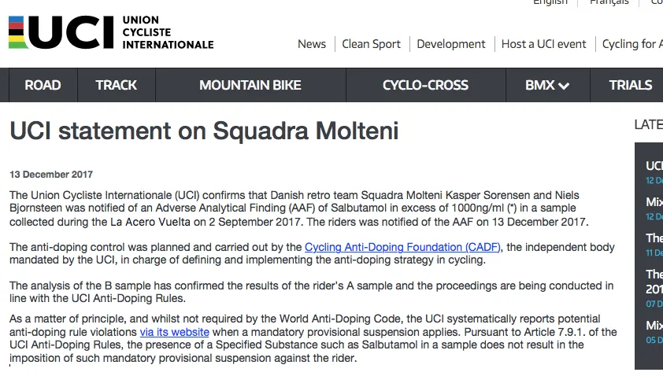
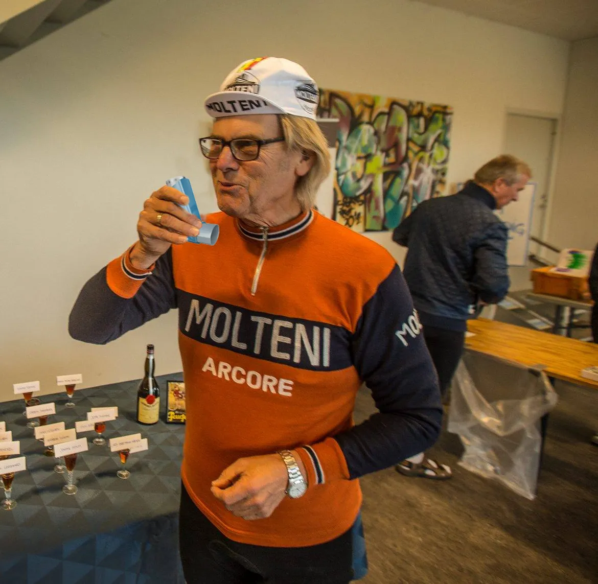

Så er den gal igen …

UCI har indledt en undersøgelse af, hvorfor Kasper Sørensen og Niels Bjørnsteen efter en La Acero Vuelta den 2. september i år havde dobbelt så meget Salbutamol (astma-medicin) i en urinprøve, end WADA’s grænseværdier tillader.
Jeg kan bekræfte at både Kasper og Niels havde astmaspray med til La Acero Vuelta. Men jeg sagde til dem, at de fand’me kun måtte tage et sug om morgenen – ikke to!, fortæller holdlæge Finn Birk, fra en let skrattende fastnettelefon fra Fyn.

Kaptajn Bjørnsteen husker episoden noget anderledes:
Kasper og jeg får os en dobbelt espresso og en Fernet Branca hver inden starten på dén etape, som vi for øvrigt vandt. Dét der med astmaspray, det er sku noget overvurderet fis. Det giver ikke en skid – andet end dårlig ånde, fortæller Kaptajn Bjørnsteen.
Holdlæge Finn Birk fastslår dog, at der i øvrigt intet er i vejen for, at både Kasper og Niels bruger astmaspray.
Vi har på hele holdet TUE-tilladelser til at bruge astmaspray – og vi kan let printe nye, når vi løber tør, slutter Finn Birk, der selv både bruger astmaspray og snupper en Gammel Dansk inden et løb.
